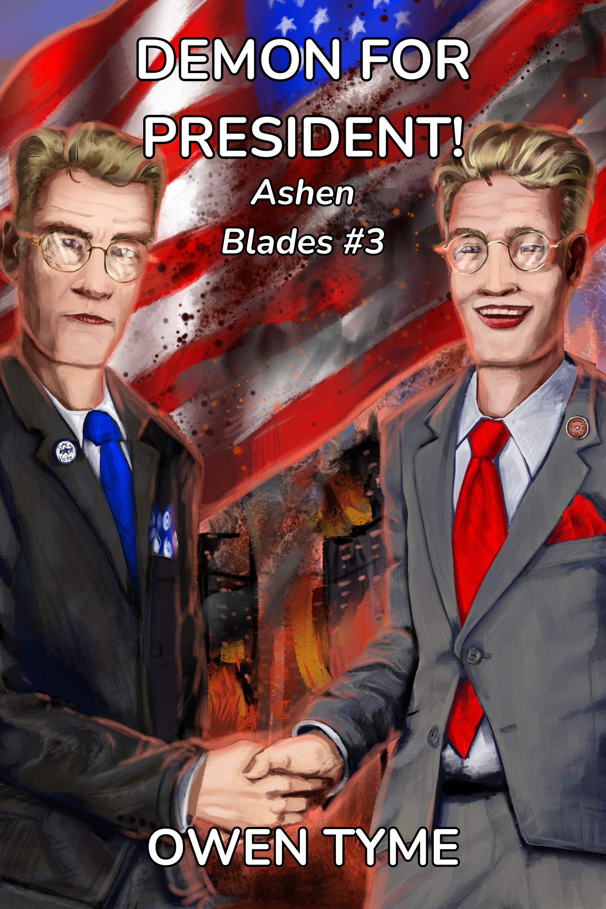
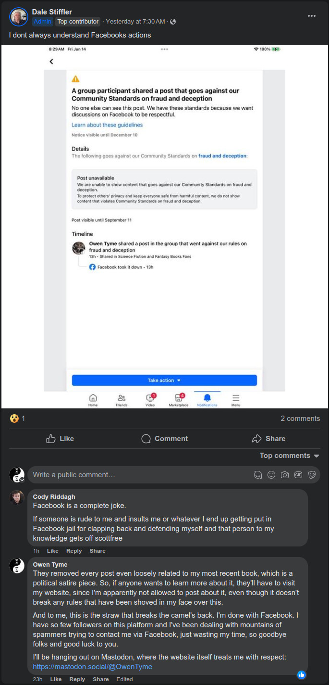
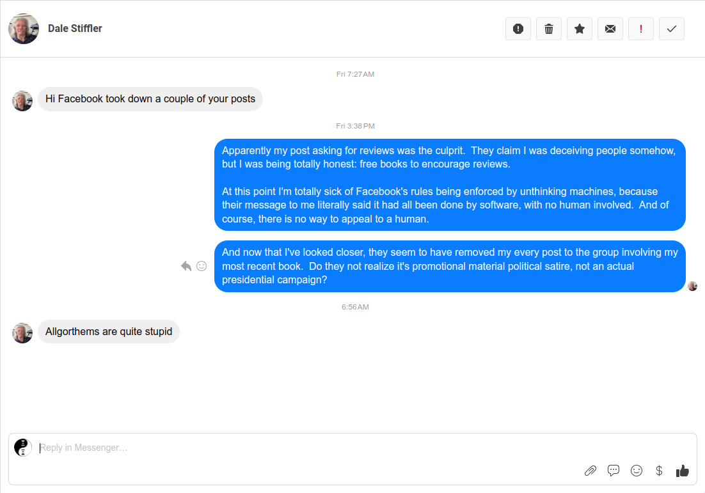

Tymely News
Shame On Me, I Guess, Part III
Despite my earlier posts regarding how much I dislike the social-media-platform-that-shall-remain-nameless, I got used to using it as an additional platform on which to toot my horn and gain some fans.
I had hoped to reach a larger audience, but now regret my choice to use that website for more than just an experiment.
What Happened?
I released Demon for President!, which is a political satire piece, in which a demon runs for President of the United States.
I posted about it a few times via a science-fiction and fantasy group that I'd taken a liking to, which requires manual approval for all posts before they're shown publicly. The group admin had no issue with what I was doing and approved. He often hit like on my posts in the past, as well. Not that one, but political satire isn't everyone's cup of tea, so fair enough.
Then yesterday, the social-media-platform-that-shall-remain-nameless pulled every last one of my posts to the group over a supposed rule violation for "fraud and deceptive practices". The group admin was absolutely mystified by this, because he knew as well as I that I wasn't deceiving anyone. Any human being that read my posts would have come to the same conclusion.
The software (probably AI) that the social-media-platform-that-shall-remain-nameless uses to moderate literally cannot tell the difference between language related to selling a political satire book and an attempt to get people to vote for a non-existent demon that's running for president.
The absurdity of this is actually quite astonishing to me.
Based on the message that was shoved in my face over this unjust enforcement of their rules, they literally claim the rules for their website are not just enforced by software, but that no human being was even involved in checking the software's work. I have no option to appeal and no opportunity to seek for this to be made right.
In short, they must have fired their human moderators and replaced them with software as a result of their worship of the almighty dollar and desire to cut costs all the way to the bone.
Yes, companies exist to make a profit, but long-term profits have never been found by tying up the end-user, so they can't resist (monopolistic practices), dropping drawers and squatting down on the end user's face (disrespecting the user), followed by defecating into their screaming, open mouth (expecting them to take whatever is dished out, no matter how vile).
That is a disgusting state of affairs, which can only lead to further injustice and it's simply bad business. Period.
It's also a matter of squashing people's right to voice themselves. Yeah, I know, the first amendment doesn't apply, because they own the website, not the government, but squashing people's rights has never been a good business decision in the long run, because the users will leave like rats bailing from a sinking ship, sooner or later.
What Now?
I will never use the social-media-platform-that-shall-remain-nameless again, not even for an experiment. My page there will remain up for another month or two, just to give the people I'm leaving behind a chance to see what happened and point the way to greener pastures.
I doubt they'll follow, but I'll at least have the satisfaction of knowing I've done the right thing by trying to raise the warning flag.
Alternatives?
Mastodon is a wonderful social media platform that I can't praise enough, which mimics the interface of the social-media-platform-formerly-known-as-twitter. I've been welcomed by the people that use it, the platform itself treats me with respect and the rules for the server I use are really quite short and straight to the point. I've been using it about the same amount of time as the social-media-platform-that-shall-remain-nameless, but I've had far more success there.
Here's my Mastodon profile, in case you're interested.
I've also recently discovered Lemmy, which is a decentralized forum system that operates similar to Mastodon, based on the same underlying technology (ActivityPub). I'll probably be using this in the future, but I've also been considering using Reddit, because it has a larger user-base.
Pulling Back the Curtain...
The social-media-platform-that-shall-remain-nameless is Facebook, by the way. It's been said before and I'm sure it will be said many times more, but the company isn't worth trusting. Their business practices are atrocious and the only reason they haven't failed is because they're so huge, with so many users, no one can stand the idea of leaving their family and friends behind, even though they'd like to stop using that website.
My suggestion: it's time to walk away. Sometimes, you just have to cross the bridge and then burn it down before the vicious wolves nipping at your heels can reach you.
I should have stuck to my original opinion and never bothered with Facebook, but that's where the people are and I was just trying to promote my novels.
From now on, I'll remember this lesson and hopefully this article series won't get a fourth entry, because that really would be embarrassing for me. "Shame on me", indeed.
What I'll be Doing
Facebook effectively tried to censor one of my books, so would anyone be interested in reading "The Novel Facebook Tried to Silence!" Somehow, I suspect that's a line that will sell books...
Evidence and What I Left Behind
I wish I had screenshots of the posts Facebook removed, but I've got nothing left of most of them due to Facebook wiping them out.
Facebook wiped out at least three promotional group posts (once again, I remind you that these required admin approval to be shown) related to Demon for President!. First was a short post with just the cover and a description of the book, mostly word for word copied from the back cover text, along with the book's cover
Second, I used my ad flyer, which shows off the Republican and Democrat personas of the villain of the book, along with I believe more or less the same text as the previous post. I may have added a little blurb to describe the series, but I'm not sure.
Last of all was a post offering free Ebooks in exchange for honest reviews. It was only tangentially related to Demon for President!, in that it displayed the cover of it.
There was no act of fraud and no intent to deceive anyone in any of this, despite Facebook's unjust claims of such. I was just trying to promote my most recently published novel and get some much-needed reviews, as any self-published author would.
Post #1: Reconstructed Book Announcement
This is as close as I can get to the original text of the post I made announcing the publishing of Demon for President!. I can't guarantee the text is 100% as it was, but this should be quite close, because most of it was a copy+paste from the same sources and it was just a re-arranged and expanded version of one of my Mastodon posts:
Book #3 of Ashen Blades, Demon for President! is now available for pre-order, coming to online bookstores June 10, 2024: https://owentyme.us/books/ashen-blades/demon-for-president.html
When a snake demon in an expensive, tailored suit takes an irreverent stab at American Presidential politics, the Hunter is literally forced to take a stab at him, to save the USA from getting a Demon for President!
The Hunter’s demonic arch-nemesis, Vogerath, returns to Earth once more, but this time, he’s running for President of the United States, on the 2024 ballot! Worse yet, the demon’s unique power to be in multiple places at once allows him to convincingly pretend to be identical twins, running as both a Republican and Democrat!
The other candidates all drop out of the race under mysterious circumstances and with his best competition being himself, he’s practically assured a win!
Soon, the American people are lapping up the snake-in-a-suit’s every word as if it were ambrosia, calling out his name at every turn, magically charmed to believe he’s the best thing since sliced bread, despite the checkered, criminal history of his “family.”
Hard pressed to get rid of him, the half-demon Hunter and her allies kill him repeatedly, but he pops back up like a bad weed, making all of his appointments on time, photogenically kissing babies, cutting the ribbons of stores and donating laundered blood-money to charitable causes.
Will the hunter manage to end the demon’s presidential campaign before election day? If she doesn’t, the USA may just get a Demon for President! Buy this book today and find out for yourself!

Post #2: The Flyer
Days later, I finally came up with a proper flyer for the book, along with some ad text I was happy with. I can't recall the text for this one, but I think it was nearly identical to the previous post, because I was rather tired at the time and in a lazy mood. I think it was posted on June 8th, but it might have been the 9th. I'm not sure.

Post #3: The Review Request
I'm lucky I saved the text of the last of my censored posts, because I intended to use it elsewhere (and yes, that giveaway code is still good):
FREE Ebooks! Use the code 'P6YFQ' via this link to get free Ebooks of my novels: https://www.smashwords.com/profile/view/OwenTyme
If you use this code, then please write an honest review as soon as you've read each book. The truth is I really do need the reviews, just to prime the pump a bit. After all, almost no one will take a chance on a book with no reviews.
Please post reviews to the sites you usually buy from, because most online book sellers, including Amazon and Barnes and Noble, will allow you to post a review without making a purchase.
All of my currently published novels are available to you, including Troll Song, Forgotten Legends, The Third Wish, She Hunts Demons, She Goes to War and Demon for President! My always free short stories are also available, including Emergent Consequences and She Goes to Summer Camp. So, yes, my entire catalog of works are free to you through June 30th, after which the code expires.
Here are some examples of sites on which you can write reviews (each link should point to a list of my published works):
https://www.amazon.com/s?i=digital-text&rh=p_27%3AOwen+Tyme&s=relevancerank&text=Owen+Tyme
https://www.goodreads.com/author/show/45452178.Owen_Tyme
What the Admin Posted
You can find the post from the admin of the group here: https://www.facebook.com/groups/scififan/permalink/8044035455647552/
And because I want as much of the evidence out of Facebook's hands as possible, here's a screenshot of the message, including the screenshot he posted and was confused over, along with my comment:

Note the other comment: another witness of the awful over-reaching of the rules, along with willful ignorance of other infractions.
To summarize: no one asked for this unjust enforcement of rules, no one is happy about it and even the admin of the group is mystified about why it happened!
What the Admin Asked Me
The admin also reached out to me. Here's a screenshot of our brief conversation on the matter:

At the time he reached out, I was only aware my review request post had been taken down (I suspected it was because of the use of "we" in the image), but after answering him I dug a little deeper, finding three or possibly four of my posts were gone, all related to the political satire piece, so I think that was the real cause.
Post #4: The Goodbye Post From My Facebook Page
Finally, here's a quote from my last post on Facebook, for the sake of preservation, in case it gets censored just like my group posts about my novel:
I'm done with this social media platform. I don't like the way they enforce their rules (all done with software, with no human to review what the software does, plus no one can appeal to a human over unjust rule enforcement by that software).
They've unjustly applied their rules to me on multiple occasions, sometimes due to over-zealous software that can't grasp the subtleties of human communication and other times because of a literal bug in their software that got me slapped with rule violations for an ad I didn't even run, the form for which was auto-populated by their own software.
Yes, I'm serious: the software filled the form and then punished me for the content of it, before I could even change it. I'm tired of how broken this website is. Period. So, I won't be posting here anymore. I'll leave the page up for now, to get the word out, but when I'm ready (probably in a month or two), it will come down.
If you still want to follow my work on a social media platform, try my Mastodon profile, which is where I'm most active: https://mastodon.social/@OwenTyme
Alternatively, you can bookmark my website and visit from time to time, because I update it often: https://owentyme.us My website includes a blog you can subscribe to with an RSS reader: https://owentyme.us/blog/
Finally, if you just want to chat with me, my E-mail address has always been public: owentyme@owentyme.us
Good luck to all of you that are staying behind. I'm sure the rule-enforcement bots are coming for you next, since we apparently live in a dystopian future ruled by robots.
Final Thoughts
Sorry this post is far longer than my typical blog entry, but I wanted to both express my feelings and set aside some evidence of Facebook's shameful behavior for the sake of warning others.
I hope you learned something of value from my experience, because perhaps that would make it all worth it.
Tags: social-media, social-media-platform-that-shall-remain-nameless
Shame On Me, I Guess, Part II
After a day away from the social-media-platform-that-shall-remain-nameless, I logged in to check the status of my appeal. Lo and behold, my account has magically been reactivated, just as I predicted!
Why does sharing a photo of myself somehow convince them I didn't actually break any rules, even though their algorithm repeatedly flags me for such? What the heck is even going on, man? Why don't they bother to actually explain what's going on?
Honestly, if this is the way they behave, then clearly, the social-media-platform-that-shall-remain-nameless is nearly as much of a dumpster fire as the social-media-platform-formerly-known-as-twitter. Their algorithm is also clearly on hard drugs.
As an experiment to satisfy my morbid curiosity, I removed the photo of myself from the page on the social-media-platform-that-shall-remain-nameless and replaced it with my publishing mark, just to see how deep this rabbit hole goes.
I half-suspect that my account will be blocked again within a week and a half. If not, then I'll put the photo back up and see what happens, then. It may be that putting the face of a human being on a secondary page is what the algorithm doesn't like.
Perhaps an author isn't allowed to be a human being.
After all, the owner of the company has a face only an AI could have generated. Honestly, I've never seen another human being whose face was so clearly stuck in the middle of the Uncanny Valley and yet, people claim to have met him, in person. Perhaps they're AI generated, too.
Anyway, I'll keep you all posted as this story of madness swirling around the social media's toilet drain continues. Hopefully, my experiments will at least help others that wish to promote their writing online.
Oh yeah, and by the way, you can find the social media profile I actually care about on Mastodon. I quite like Mastodon, because it's not governed by a brainless algorithm and all the posts in the feeds are in (gasp!) chronological order! What a concept, eh? It's based on open source software, so just about anyone can setup a server if they've the time, inclination and resources. Best of all, those servers all talk to each other and share posts back and forth. Isn't that cool?
I was also quite delighted when I looked at the rules for Mastodon.social (the largest Mastodon server), which are actually human-readable, rather than lawyer-readable.
Tags: social-media, social-media-platform-that-shall-remain-nameless
Shame On Me, I Guess
In my last post involving the social-media-platform-that-shall-remain-nameless, I ended by saying, "Fool me once, shame on you, fool me twice..."
Well, apparently, the social-media-platform-that-shall-remain-nameless has once again (automatically) flagged my account for violating their rules, without telling me precisely which rule I've violated.
Honestly, how can the largest social media company in the world be so narrow-minded about people that have pen names, especially since I'm not hiding my true identity in any meaningful way? I registered the freaking account in my real name and then made the separate page for my pen name, because I'm an honest person. I suspect they think I'm trying to impersonate my own pen name, again. Ugh.
I must say, their appeal process is the stupidest thing I've ever seen, consisting entirely of asking the user to upload a photo of themselves. What is the freaking purpose of that? Why can't I file a message asking what I did wrong? Why are the rules of their website (by their own admission) enforced by an algorithm, rather than a human moderator?
So, I'll end the sentence from the previous post by saying, "...shame on me."
Out of sheer morbid curiosity, I've appealed, again.
Oh, I have no intention of making serious use of the social-media-platform-that-shall-remain-nameless from this point on, but if they're going to play stupid games with me, then I want to see just how far the die rolls. Five minutes of my time every once in a while to file an appeal is no real burden, but you better believe I'm never posting anything there, ever again.
Screw Facebook. Whoops, did I type that in the clear?
Tags: social-media, social-media-platform-that-shall-remain-nameless
Building a Blog
After a rather frustrating and enraging experience with a particular social-media-platform-that-shall-remain-nameless suspending my account for no apparent reason about ten minutes after I had a page setup for my pen name, on Friday, I wasn't in to the mood to deal with another social media platform.
The biggest alternative, the social-media-platform-formerly-known-as-twitter currently seems to be a huge dumpster fire, so instead, I set my mind to creating a blog to accompany my author website, because I need some way to communicate with fans.
Requirements
I set out to find blog software that met the following requirements:
- Able to generate static HTML pages
- WYSIWYG editing
- Can run on my own computer
- Simple
- Disqus.com comments
Static HTML
My author website is built on Feather Wiki, which is basically a small, self-editing, multi-page HTML file with embedded JavaScript to handle the real work. It's a fascinatingly simple and easy approach to making a website and once you're ready to publish it, you just turn off the editing features from the settings page, save it and upload. Ideally, I was looking for the means to setup a blog with a similar piece of software.
WYSIWYG
WYSIWYG = What You See Is What You Get. Ideally, I wanted software that made itself easy to use by allowing me to edit pages like a word processor might edit a document.
My Own Hardware
I use Linux, exclusively, so I needed something I could run from my own computer.
The KISS Principle
KISS = Keep It Simple, Stupid! Finally, I want something simple. Honestly, there's a lot of software out there for making websites, but almost none of it is simple and the install instructions for most are incomprehensible, to say the least.
Open Source developers are awesome, in general, I love them for giving things away for free and I often do the same, but man, they need to learn to write better documentation. Sorry guys, but you know it just as well as I do!
Sadly, simple software installation is just not something most of them even bother to try and make happen, so we're stuck with installation instructions that are not even close to simple.
The Comments
For a previous website, specifically a wiki, I embedded a Disqus widget on each page. That's a very useful website for adding comments to an otherwise entirely static HTML page, which allows logins from Google, the social-media-platform-that-shall-remain-nameless and the social-media-platform-formerly-known-as-twitter, on top of the usual e-mail and password system most websites use.
The Solution
In the end, I stumbled across and opted to use BashBlog. BashBlog is dead simple, being nothing more than a shell script (the Linux equivalent to a DOS/Windows batch file, though shell scripts are much more powerful). Since I've dabbled in generating a static HTML website from a shell script before, this turned out to be ideal. The script itself is rather elegantly simple and easy to modify. It also turns out that BashBlog supports Disqus.com comments, with a little easy setup.
So, with a useful tool in hand, I experimented with making a handful of small modifications, like adding the cover image I originally planned to use with the social-media-platform-that-shall-remain-nameless.
So, that just leaves the WYSIWYG editor, which I still lack. However, I did install a plugin to BashBlog that lets it work with Markdown (a simple text format that interprets various symbols as bold, italics and a whole slew of other, useful things) instead of forcing me to write HTML files, directly. Then I modified BashBlog to call out to a program called ghostwriter, which just happened to be available for my Linux distribution of choice (Linux Mint). Ghostwriter allows me to see my Markdown text side-by-side with the rendered text, so it's almost as good as a WYSIWYG editor.
In the end, with this combination of tools, I've got a simple blogging system that allows me to update this website with relative ease and which I'm comfortable customizing to my own needs.
Conclusion
So, to recap my earlier points, let's look over my list of requirements and check off a few things:
- [X] Able to generate static HTML pages
- [?] WYSIWYG editing
- [X] Can run on my own computer
- [X] KISS
- [X] Disqus.com comments
I almost accomplished all I set out to do and I can accept that one answer that's neither yes or no, for now. In the future I'll have to experiment with other software that can directly edit HTML files, which I could call from the script (Libreoffice can do this, but the trouble is I need incomplete HTML files without wrapping <body> and </body> tags), but that's a task for another day.
I hope this helps others in a similar position and I hope this helps others escape the social-media-platform-that-shall-remain-nameless and it's dumpster fire alternative, the social-media-platform-formerly-known-as-twitter.
Addendum A
After all that anger, frustration and work to make a blog, a friend of mine mentioned the existence of Mastodon. Honestly, I hadn't heard the name in quite some time, but it turned out to be open source (yay!). The biggest server, mastodon.social, has extremely simple rules and a privacy policy that's actually human-readable, though still written in the esoteric tongue of lawyers, demons and demon-lawyers (which only barely qualifies as English).
By comparison, the social-media-platform-that-shall-remain-nameless used an exhaustive set of legal documents that very carefully spelled out all the ways they were allowed to misuse my personal information for the sake of the bottom dollar, while simultaneously trying to hide that fact in the esoteric tongue of lawyers, demons and demon-lawyers.
So, the end result of Friday's frustration is this blog and my new Mastodon account.
Addendum B
In the mean time, the social-media-platform-that-shall-remain-nameless has responded to my appeal to my account getting suspended by restoring it without actually telling me what they think I did wrong. I find myself wondering, is it worth the frustration? I'm really not sure and until they give me a clear response to what the heck they think I did wrong, I don't see the point in using the social-media-platform-that-shall-remain-nameless.
Honestly, would you? Fool me once, shame on you, fool me twice...
Tags: blog, html, websites, shell-script, social-media, mastodon, social-media-platform-that-shall-remain-nameless